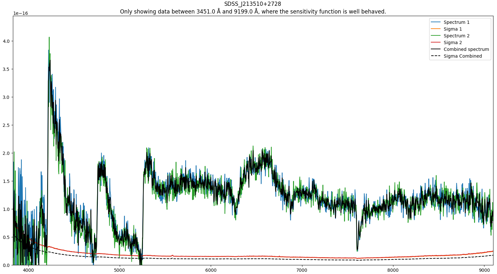
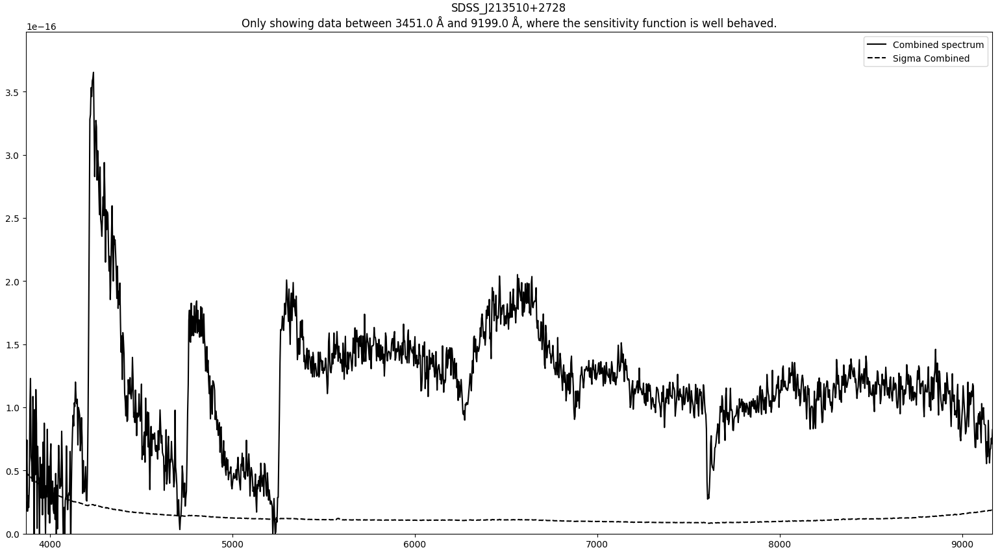

Combining the spectra¶
This routine combine the flux calibrated 1-d spectra into a single spectrum for the files specified in the configuration file.
Quick start¶
The routine is executed by running the following command in the terminal:
pylongslit_combine_spec PATH_TO_CONFIG_FILE
The routine will do a weighted average of the flux calibrated 1-d spectra:
For the error estimation, please see the note on uncertainties.
The combined spectrum will both be shown together with the individual spectra, and alone (from the SDSS_J213510+2728 dataset):
 {kind=link}
{kind=link}
Parameter options¶
What files to combine is specified in the configuration file. For example dataset SDSS_J213510+2728:
"combine": {
"SDSS_J213510+2728": ["ALHh080251.fits", "ALHh080252.fits"]
}
The template is:
"combine": {
"object_name_1": ["file1.fits", "file2.fits", ...],
"object_name_2": ["file1.fits", "file2.fits", ...],
...
}
Where the object names are the names that will be given the combined spectra.
These will be saved in the output directory specified in the configuration file,
with the name OBJECTNAME_combined.dat. The files have the following format:
wavelength, flux, variance.
The "file1.fits" etc. are the names of the raw observation files from which
the 1-d spectra were extracted.
Flux calibration ← Previous pipeline step